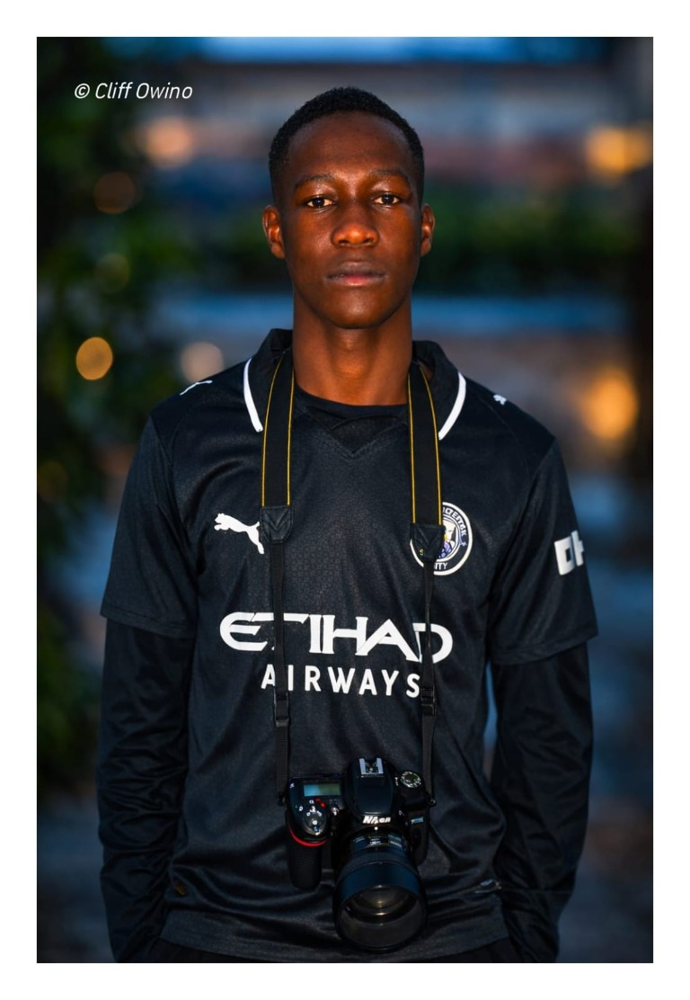
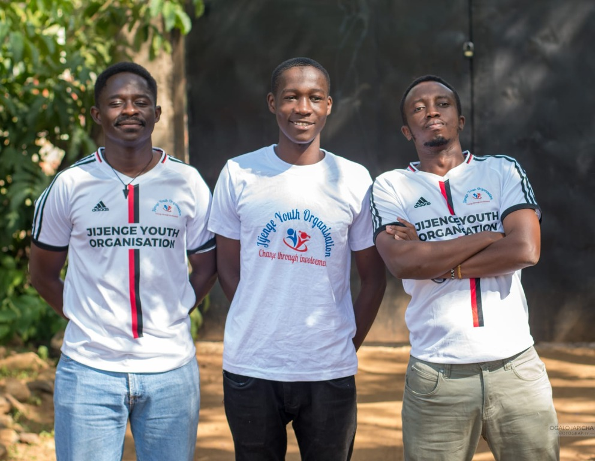

01 / PROGRAMMING
Programming
- PythonFamiliar
- JavaScriptWorking knowledge
- HTML5Working knowledge
- CSS3Working knowledge
- Git / GitHubFamiliar
HELLO, I'M · KISUMU, KENYA
Computer Science Student · Web Developer · Photographer · Digital Innovator · Visual Storyteller
Based in Kenya, I build practical digital solutions and use photography to tell stories and showcase communities and places.

01 — ABOUT ME
I'm Cliff Owino, a Computer Science student at Kibabii University and a technology enthusiast passionate about AI, software development, and digital innovation.
I am building my skills in Python, JavaScript, HTML, CSS, Git, data annotation, and AI data technologies, with an intermediate level of coding experience. Beyond technology, I am actively interested in community development and youth empowerment through my involvement with Jijenge Centre for Social Development. This has exposed me to digital safety, youth participation, education, mental wellness, environmental action, and community engagement. I enjoy turning ideas into practical digital solutions and continually learning new technologies. My long-term goal is to become a skilled technology and AI professional who uses innovation to solve real-world problems, create opportunities for young people, and contribute to positive change in my community.
02 — SKILLS & SERVICES
A growing toolkit across software, data, and AI—built through practical learning and exploration.
01 / PROGRAMMING
02 / ARTIFICIAL INTELLIGENCE
04 / WEB DEVELOPMENT
AREAS I'M EXPLORING
Data annotation, preparation, cleaning, and validation.
Responsive websites and practical interfaces using HTML, CSS, and JavaScript.
Image, video, and dataset annotation using modern data platforms.
Exploring affordable digital solutions for education, businesses, and communities.
04 — AI JOURNEY
A work in progress: developing foundations, practicing with tools, and looking for meaningful ways to apply what I learn.
Studying AI concepts, programming, data preparation, and computer science fundamentals.
Exploring annotation tools, data quality, and small exercises with safe, shareable material.
Turning ideas into web projects and exploring how software can make everyday tasks easier.
Working toward practical, responsible technology ideas for education and community needs.
03 — PORTFOLIO
Real builds, learning projects, and clearly labeled concepts. Project visuals are illustrative previews, not screenshots.
Tourism · Web Development
Business · Web Development
Education Technology
Artificial Intelligence · Data
GIS · Smart Mobility
E-Commerce · Marketplace
Photography · Motion · Visual Storytelling
Personal Website · Web Development
CREATIVE HOBBY
Photography is another major part of my creative identity. I use it to document experiences, tell stories, preserve memories, and showcase communities and places.
PHOTOGRAPHY INTERESTS

CREATIVE BRAND
Capture 1 Motion is where my creative side comes together with my interest in technology and visual storytelling. We focus on photography, motion content, and creative production.
“Capture the moment. Tell the story. Preserve the memory.”
OWINO CLIFFPhotographer · Creative · Technology
OGALO JAPICHAPhotography · Creative Partner
CURIOSITY & DIRECTION
A mix of technical, creative, and community interests that shape how I learn and the ideas I want to explore.
01 / TECHNOLOGY
02 / CREATIVE WORK
03 / COMMUNITY
04 — EDUCATION & LEARNING
SECONDARY EDUCATION
Completed secondary education and developed an early interest in technology, problem solving, and computer-related fields.
CURRENTLY PURSUING
Kibabii University
Currently Learning
06 — PROJECT EXPERIENCE
Independent and learning-focused work—not presented as employment or client experience.
Built a responsive school fees portal with an Express API, PostgreSQL data store, and role-specific Admin, Bursar, and Parent flows.
Explore the codeDeveloping practical familiarity with annotation platforms, data preparation, cleaning, and validation. Public portfolio samples will use non-confidential data.
See related skills07 — TRAINING
Completed certificates as listed in my current portfolio. Provider, year, and public certificate links are not available yet.
08 — COMMUNITY
Community development and youth empowerment are important parts of how I think about positive impact.
Through my involvement with Jijenge Centre for Social Development, I have been exposed to digital safety, youth participation, education, mental wellness, environmental action, and community engagement. These experiences strengthen my interest in technology that responds to real needs and helps create opportunities for young people.
Visit Jijenge Centre for Social Development
PEOPLE WHO INSPIRE MY GROWTH
I value mentorship as an important part of continuous learning and professional growth.
MENTOR & PROFESSIONAL INFLUENCE
Supporting my learning, development, and growth.
MENTOR & PROFESSIONAL INFLUENCE
Contributing to my development, creativity, and career journey.
09 — OPEN SOURCE
10 — CURRENTLY LEARNING
LEARNING NOTES TO WRITE
What I'm learning about data annotation and quality
Building useful web tools for everyday problems
My first steps exploring AI and computer vision
Planned topics — notes will be added as I write them.
11 — WHERE I'M GOING
My goal is to grow into a skilled software and AI professional, creating practical solutions and opportunities for young people.
Let's connect05 — CONTACT
Have a technology project, collaboration opportunity, internship opportunity, or idea you'd like to discuss? I'd be happy to connect.
SUPPORT
Choose an amount and pay securely with M-PESA through Paystack.